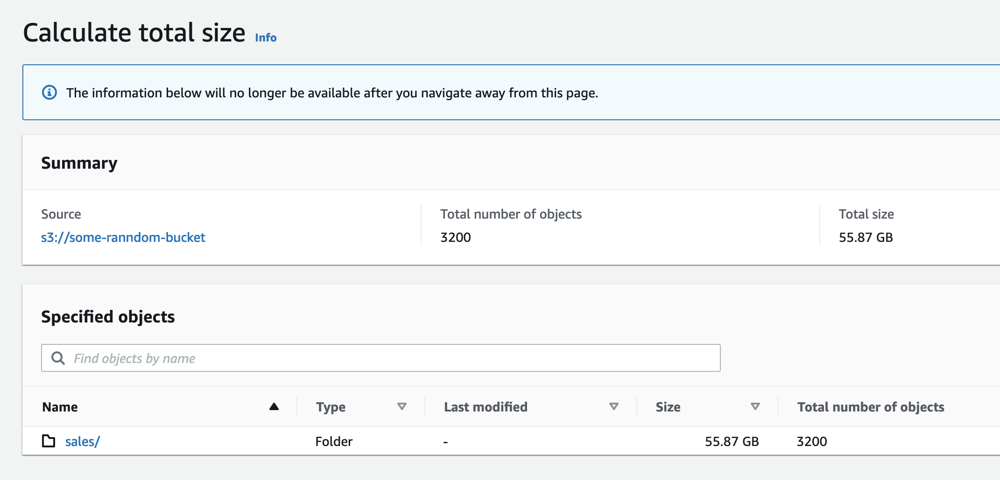

<section>
  <div class="body-container">
    <div class="container">
      <h4>Build ETL and Data Analytics pipeline with Spark and AWS Glue</h4>
    </div>
    <div class="container">
      <p class="f3rem mtop-20">In this blog we'll learn how to build a data ETL pipeline with <a
          href="https://spark.apache.org/" target="blank">Apache Spark</a> and <a href="https://aws.amazon.com/glue/"
          target="blank">AWS Glue</a>.
        We have sales transaction data from a retail store with 55 GB in volume and
        23 billion records. Data transformations will be built with pyspark and submitted to fully AWS managed multinode
        spark cluster. Following is the data schema we'll be working with:
      </p>
      
      <h5 class="mtop-20 f3rem">Following are some key analytics requirements that we intend to address:</h5>
      <ul class="ana-list f3rem">
        <li class="ana-item">Top customers w.r.t order quantity and revenues generated</li>
        <li class="ana-item">Sales distrbution across months of year, weeks of year, days of week and hours of day</li>
        <li class="ana-item">Sales distribution across countries w.r.t order quatity and revenue generated</li>
        <li class="ana-item">Sales distribution for volume and revenue across unique and repeat customers</li>
        <li class="ana-item">Sales trends across all the items sold at the retail store</li>
      </ul>
      <h5 class="mtop-10 f3rem">Data sits in a s3 bucket with following details:</h5>
      
      
    </div>
  </div>
</section>